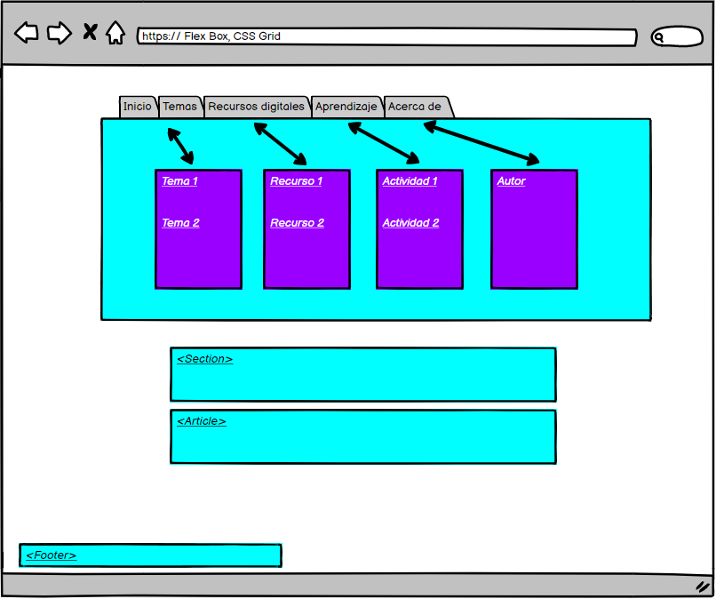

El proposito de este sitio web es favorecer el aprendizaje con respecto a los temas de Flex Box, CSS
Grid
Flex Box
El Flex Box permite acomodar los elementos de una página según cambien las dimensiones y orientación de
la página.Por tanto,
nos permite hacer diseño adaptivo para que nuestras páginas web se visualicen correctamente en cuanquier
dispositivo. Este
estándar es bastante reciente y todavía no está soportado por todos los navegadores, aunque lo estara
muy pronto. Las ventajas
son un código mucho más legible y simple, donde podemos, por ejemplo,cambiar el orden de los elementos
independientemente del
orden en el codigo HTML.
CSS Grid
Cada navegador tiene su propia hoja de estilos interna. Esto implica que el estilo por defecto de
algunos de los elemntos puede
ser diferente para cada navegador,pues hay múltiples diferencias visuales a la hora de mostrar una misma
página con navegadores.
Este método nos permite consultar o modificar cualquier propiedad de hoja de estilos de un elemento
HTML. Este método tiene
dos versiones,una para consultar y otra para establecer el valor de una propiedad.
Referencias APA
Recio García, J. A. (2016). HTML5, CSS3 y JQuery

Temas
Tema 1 Flex Box
FleXbox es muy transparente: está basado en Python, lo que proporciona un fácil acceso a su diseño
interno. Está integrado
con la caja de herramientas ASTRA, que permite reconstrucciones rápidas de múltiples GPU en una sola
estación de trabajo.
Anteriormente se demostró que los tiempos computacionales de ASTRA escalan casi linealmente con la
cantidad de GPU disponibles,
lo que permite calcularvolúmenes de vóxel en sólo unos segundos. Se emplean otros paquetes relevantes,
como numpy
(álgebra lineal y soporte de arreglos sin memoria), scipy y skimage (procesamiento y análisis de
imágenes), xraylib
(simulaciones espectrales), paramiko e imageio (SCP, E / S de datos), SimpleITK (registro de volumen),
numpy-stl (modelos de superficie).
Kostenko, A., Palenstijn, WJ, Coban, SB, Hendriksen, AA, van Liere, R. y Batenburg, KJ (2020). Creación
de prototipos de tuberías de
reconstrucción tomográfica de rayos X con FleXbox. SoftwareX , 11 , 100364.
Juan centeno . (2020) . flex-box
Reagan Fernandes . (2019) . Felxbox
Tema 2 CSS Grid
El ccs grid consiste en disponer correctamente los distintos elementos que la componen. El diseño debe
ser atractivo, pero claro al mismo tiempo, y se
debe comprender de forma intuitiva. Las hojas de estilo en cascada (CSS) constituyen una herramienta
para diseñar sitios web con esas características.
Los diseños de cuadrícula son fundamentales para el diseño de sitios web, y el módulo CSS Grid es la
herramienta más poderosa y fácil para crearlo.
En este artículo, lo guiaré a través de los conceptos básicos de CSS Grid lo más rápido posible.